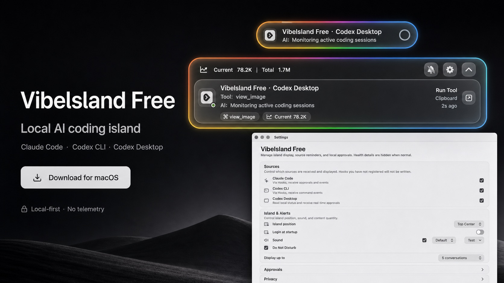

It reads
- Local Claude Code, Codex CLI, and Codex Desktop state.
- Local status summaries used to show activity, tool calls, and approvals.
- Claude and Codex local connection settings and runtime state.
Local-first
Vibelsland Free reads local Claude Code, Codex CLI, and Codex Desktop state only to render the island and handle approvals. It creates no account, uploads no telemetry, and does not sync session content to a remote server.
Data boundary
Retention and deletion
Local connection files are used only for communication on your Mac. Logs are for troubleshooting and are not uploaded by the app. After disconnecting local integrations, runtime files, config, and logs can be deleted manually.
~/.vibelsland-free and let Vibelsland Free communicate with tools on your Mac.~/.vibelsland-free removes runtime files; the app or connection entries recreate the required files on the next launch.~/Library/Logs/VibelslandFree/app.log and record connection state, event types, timestamps, local paths, and error reasons.~/Library/Application Support/VibelslandFree, ~/Library/Logs/VibelslandFree, and ~/.vibelsland-free.Control
The app only changes corresponding configuration when you install, repair, or uninstall local connections. Status sent to the app is summarized so it keeps only what is needed to show current activity.

Network
Vibelsland Free status display, source controls, and local approvals work on your Mac. Claude Code, Codex CLI, and Codex Desktop may have their own network connections independently of this app.
Vibelsland Free is an independent project and is not affiliated with Anthropic, OpenAI, Claude, or Codex.
Open local data and logs supportWebsite privacy
This static website sets no first-party cookies, embeds no analytics script, and collects no forms. Pages are hosted by GitHub Pages; GitHub Release, source, and Issues links move you into GitHub's service boundary.